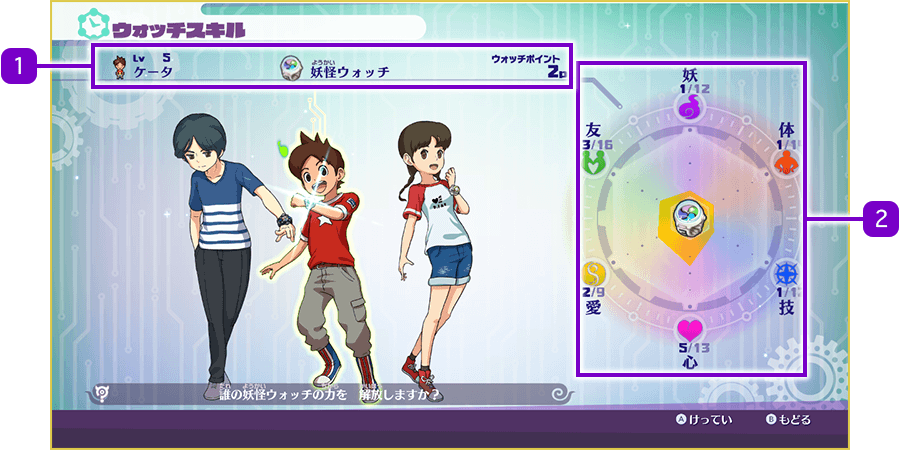
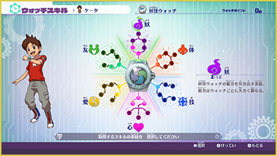
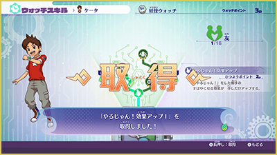

Habilidades del Reloj
¿Qué son las Habilidades del Reloj?
Los Watchers como Nathan pueden desarrollar diversas "Habilidades del Reloj" gracias al poder del Yo-kai Watch. Al aprenderlas, podrán adquirir nuevas técnicas o conseguir habilidades pasivas que se activan automáticamente durante las batallas.
En la aplicación "Habilidades" puedes comprobar tu progreso y aprender nuevas habilidades.

- 1Información del personaje
-
Muestra el nivel actual, nombre, el Yo-kai Watch que lleva equipado y los Puntos de Reloj disponibles.
Los Puntos de Reloj se consumen al aprender habilidades y se obtienen al subir de nivel o al entablar amistad con nuevas especies de Yo-kai. - 2Gráfico de progreso
-
Las Habilidades del Reloj se dividen en 6 tipos: Espíritu, Cuerpo, Técnica, Mente, Afecto y Amistad. El gráfico muestra cuánto has avanzado en cada categoría.
Elegir el tipo de Habilidad del Reloj
Tras seleccionar a un Watcher con Ⓐ, accederás a la pantalla de habilidades. Elige el tipo que prefieras con el stick izquierdo y confirma pulsando Ⓐ.

Asignar Puntos de Reloj
Cada categoría contiene 6 habilidades dispuestas en un árbol de habilidades. Selecciona la habilidad que desees y pulsa el Ⓐ para gastar los Puntos de Reloj necesarios y aprenderla.
